Champions League
Copa do Mundo
Bola de Ouro
Olhe também nossos outros sites!
História da Copa do Mundo
Você sabe qual é a história da maior competição de seleções de futebol do mundo? Se não, vamos aprender agora!
A história da Copa do Mundo de futebol começa em 1928 quando o francês Jules Rimet assume o comando da Federação Internacional de Futebol (FIFA) e começa a organizar a primeira competição de futebol mundial. A estreia do evento aconteceu em 1930 no Uruguai e contou com a participação de 13 seleções convidadas.
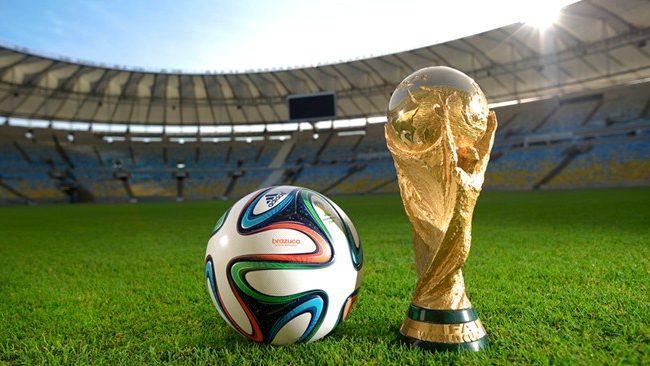
Maiores campeões:
- Brasil (5 títulos)
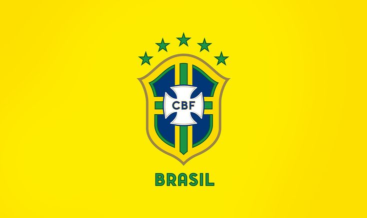
- Alemanha (4 títulos)
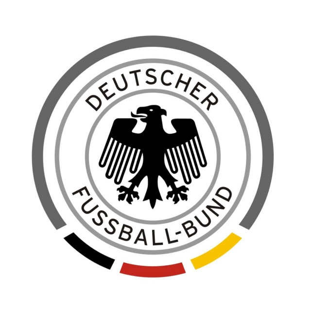
- Itália (4 títulos)
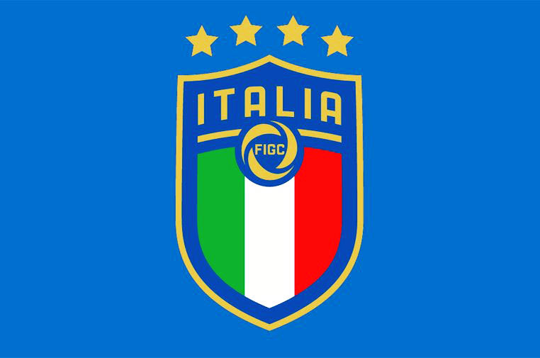
- Argentina (3 títulos)
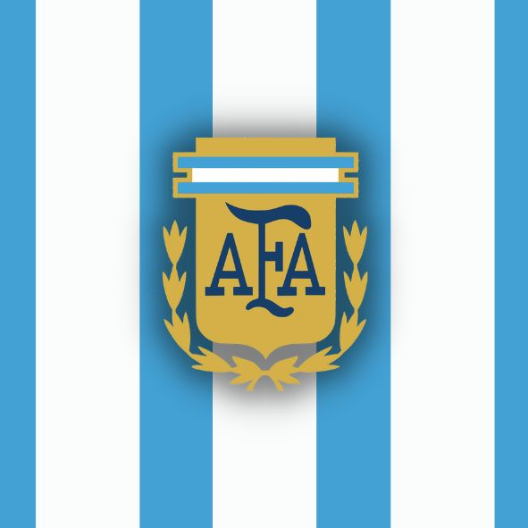
- França (2 títulos)
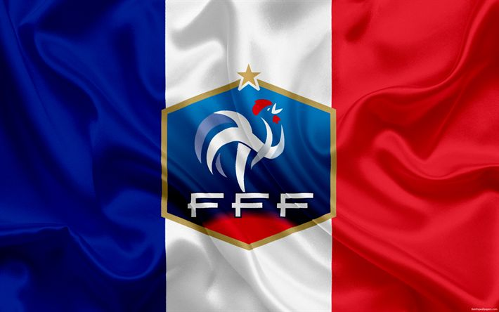
Última edição:
A última edição foi em 2022, no Qatar. Nisso foram 32 seleções para o páis, todos jogaram bem, mas um time se sobressaiu mais do que os outros, os nossos vizinhos argentinos foram campeões pra cima da poderosa França. Empataram em 3x3 em 120 minutos de partida e foram para os pênaltis, com o goleiro Dibu Martinez pegando dois pênaltis.

Seleção brasileira em copas do mundo
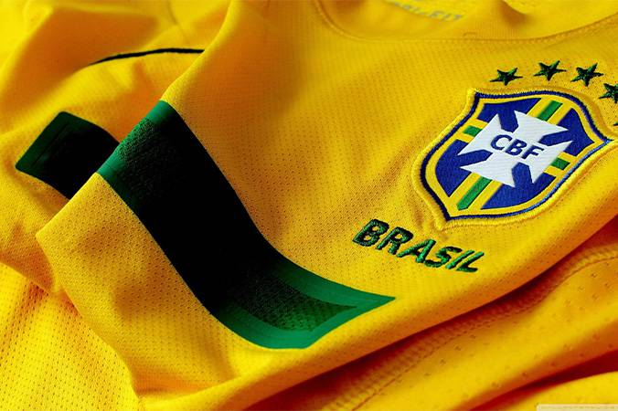
A nossa seleção amarela e verde participou de todas as edições já feitas, de 1930 a 2022 eles foram para todas as edições.
- 1958 foi o primeiro título da nossa seleção
- 1962 foi o nosso bi, ganhamos dois títulos seguidos
- Na edição de 1966 caímos na fase de grupos, mas em 1970 voltamos a ganhar, fomos a primeira seleção a ganhar o tri da copa do mundo.
- Depois do tri, ficamos 24 anos em jejum de títulos, somente em 1994 nós ganhamos o tetra nos pênaltis contra a Itália
- Após o fiasco que foi em 1998, em 2002 chegamos com tudo para poder nos redimir da decepção que foi em 98, em 2002 fomos campeoões pra cima da Alemanha.
Maiores rtilheiros do torneio
- Miroslav Klose: 16 gols pela seleção alemã
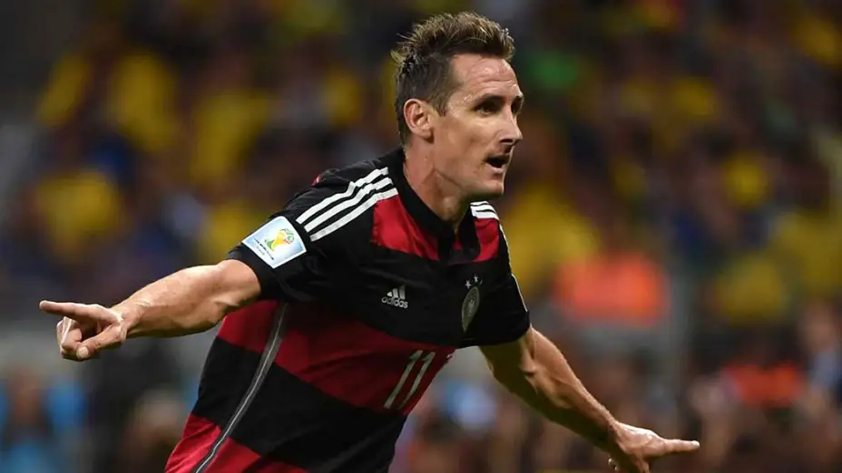
- Ronaldo Fenômeno: 15 gols pela seleção brasileira

- Gerd Müller: 14 gols pela seleção alemã
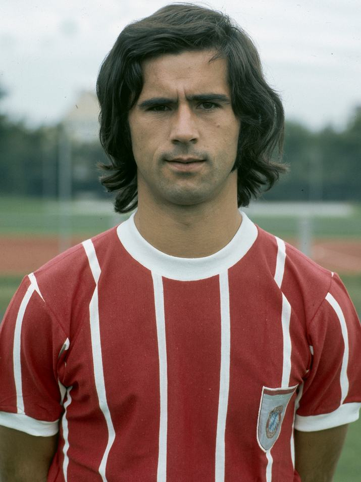
- Just Fontaine: 13 gols pela seleção francesa
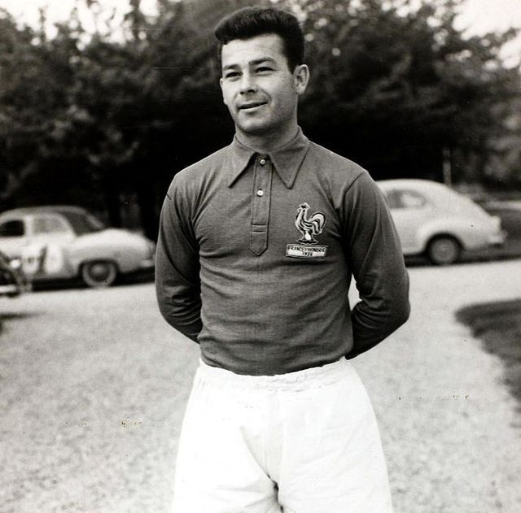
- Lionel Messi: 13 gols pela seleção argentina

- Kilyan Mbappé: 12 gols pela seleção francesa
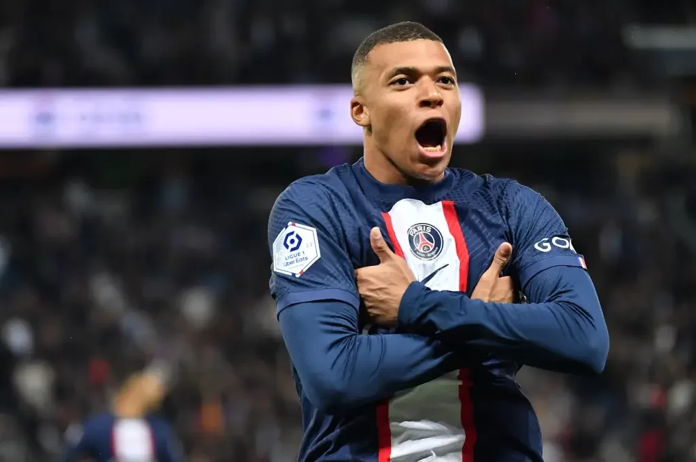
- Pelé: 12 gols pela seleção brasileira
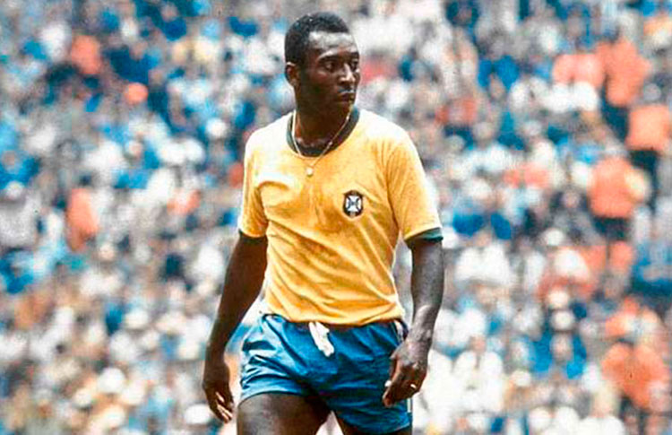
- Jürgen Klinsmann: 11 gols pela seleção alemã
- Sandor Kocsis: 11 gols pela seleção hungara

- Gbariel Batistuta 10 gols pela seleção argentina
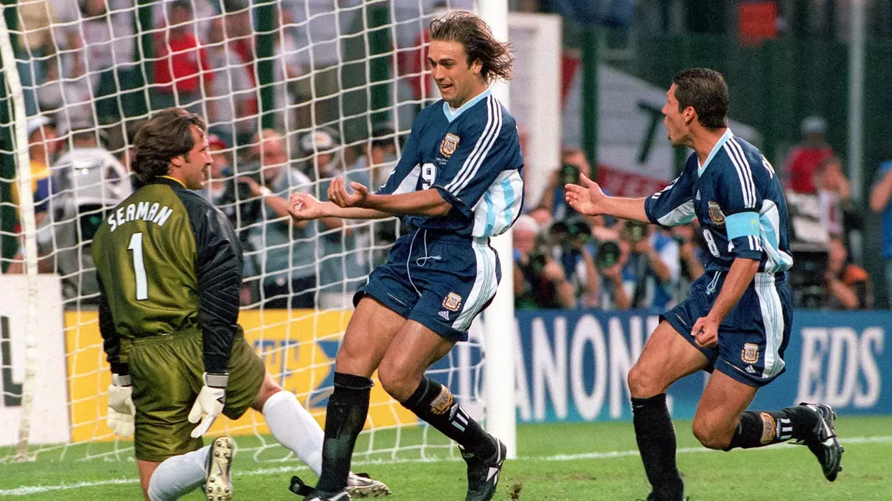